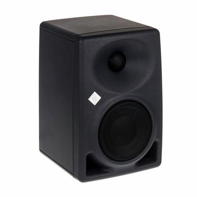

🎧 耳機入門推薦
MDR-7506 (Sony)
約 NT$3,500–5,000
廣播與錄音室的長青款，可折疊好帶、聲音中性，外出收音或臨時檢查最省事。
封閉式 · 有線 · 3.5mm／6.3mm

🎧 耳機入門推薦
ATH-M50x (Audio-Technica)
約 NT$4,000–5,500
錄音室最常見的封閉式鑑聽耳機，好推、耐用，混音檢查與錄音時監聽都合適。
封閉式 · 可換線 · 附三種線材

🔊 監聽喇叭入門推薦
HS5 (Yamaha)
約 NT$7,000–9,000／支
經典白色低音盆近場監聽，中頻誠實、不美化，小房間也放得下，編曲起步的第一對喇叭。
5 吋低音 · 主動式 · 一對購買

🎚️ 錄音介面入門推薦
Scarlett 2i2 4th Gen (Focusrite)
約 NT$7,000–9,000
入門 2 進 2 出最多人用的一台，驅動穩定、延遲低，錄人聲與直播都夠用。
2 in / 2 out · USB-C · 48kHz

🎙️ 麥克風入門推薦
SM7B (Shure)
約 NT$13,000–16,000
廣播級動圈麥克風，房間沒做吸音也能錄到厚實人聲，旁白與歌唱都常用。
動圈 · 心形指向 · XLR

🎹 MIDI 鍵盤入門推薦
KeyLab Essential 61 mk3 (Arturia)
約 NT$8,000–10,000
61 鍵編曲鍵盤，附贈大量音源與插件，旋鈕與推桿能直接對應 DAW，入門最划算的一套。
61 鍵 · 半配重 · USB／MIDI

🎛️ DAC・耳擴入門推薦
K7 (FiiO)
約 NT$8,000–10,000
桌面 DAC／耳擴一體機，推力足夠，接上鑑聽耳機不必再另外加擴。
DAC＋耳擴 · USB／光纖／同軸

🎧 耳機專業錄音室
HD 800 S (Sennheiser)
約 NT$45,000 以上
開放式旗艦，音場與細節屬於參考級，母帶檢查與長時間聆聽都靠得住。
開放式 · 有線 · 需搭配耳擴

🎧 耳機入門推薦
NDH 30 (Neumann)
約 NT$26,000–32,000
錄音室開放式參考耳機，定位精準，跟 Neumann 監聽喇叭銜接起來聲音一致。
開放式 · 有線 · 可換線

🔊 監聽喇叭入門推薦
KH 80 DSP (Neumann)
約 NT$25,000–30,000／支
帶 DSP 校正的專業近場，用軟體補償房間問題，小空間也能做出可信的低頻判斷。
4 吋低音 · DSP 校正 · 一對購買

🔊 監聽喇叭專業錄音室
8030C (Genelec)
約 NT$30,000–36,000／支
北歐鋁箱經典，聲音中性耐聽、指向清楚，專業近場裡最長青的選擇之一。
5 吋低音 · 鋁合金箱體 · 一對購買

🎚️ 錄音介面專業錄音室
Babyface Pro FS (RME)
約 NT$38,000–45,000
業界口碑的穩定度與低延遲，固定工作室與外出錄音都能直接用，換電腦也不必重設。
12 in / 12 out · USB · TotalMix

🎙️ 麥克風專業錄音室
TLM 103 Studio Set (Neumann)
約 NT$38,000–45,000
大振膜電容麥克風，人聲與旁白的標準機，細節自然不刺耳，收主唱一次就到位。
電容 · 心形指向 · XLR

🎛️ DAC・耳擴專業錄音室
ADI-2 DAC FS (RME)
約 NT$35,000–42,000
監聽用 DAC／耳擴，內建 EQ 與動態處理，替耳機做校正或補償都很方便。
DAC＋耳擴 · EQ／Dynamics · USB